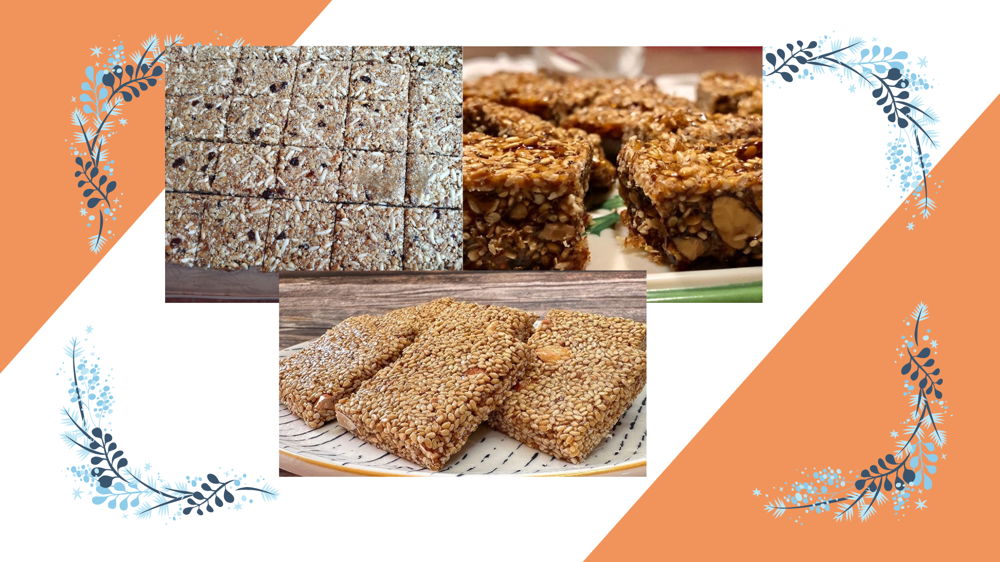
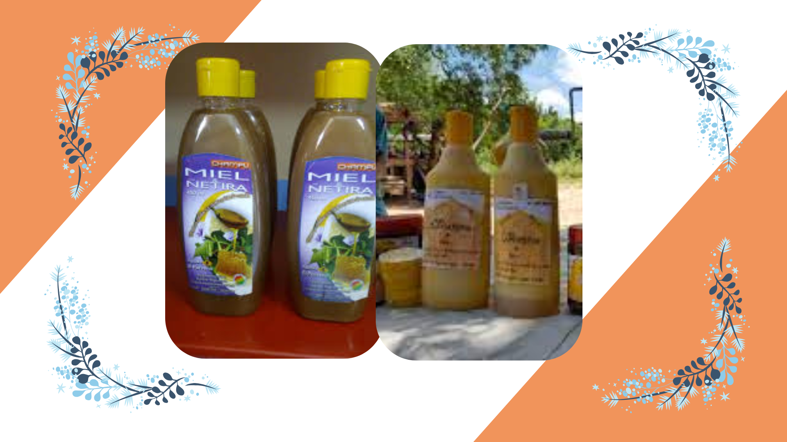
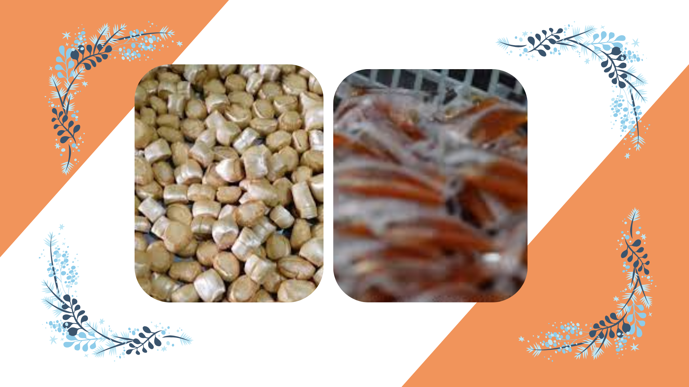
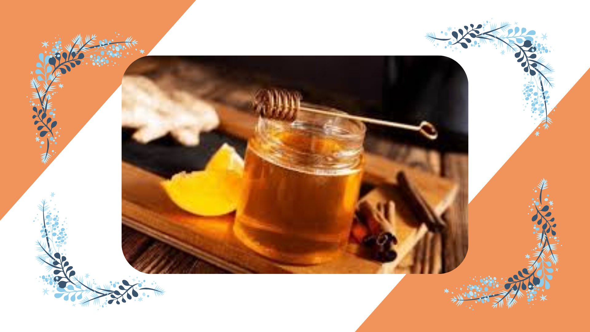

PRODUCTOS DE AAEVO
Producto 1 PROPÓLEO
El propóleo sirve para fortalecer el sistema inmunológico, combatir infecciones y ayudar a la cicatrización, gracias a sus propiedades antimicrobianas, antivirales, antiinflamatorias y antioxidantes. Sus ingredientes principales incluyen resinas, ceras, aceites esenciales y compuestos fenólicos (como flavonoides), además de vitaminas y minerales.


Producto 2 TURRÓN
El turrón de miel sirve principalmente como postre y fuente de energía, y tradicionalmente se elabora con miel, almendras peladas y tostadas, y clara de huevo. Sus ingredientes le confieren propiedades nutritivas, como aporte de grasas saludables, proteínas y vitaminas.

Producto 3 SHAMPOO
El champú de miel sirve para hidratar, nutrir y fortalecer el cabello, dejándolo más suave, brillante y manejable. Sus ingredientes principales, como la miel, la jalea real o aceites esenciales, ayudan a reparar el daño, a combatir la resequedad del cuero cabelludo y a prevenir la caída.

Producto 4 PASTILLAS
Las pastillas de miel sirven principalmente para aliviar la irritación de garganta y la tos, ya que la miel tiene propiedades calmantes y puede formar una capa protectora. Sus ingredientes comunes, que varían según el producto, incluyen própolis, vitamina C, eucalipto, y en algunas formulaciones, otros extractos naturales o mentol para reforzar sus efectos.
Producto 5 JARABE DE MIEL
El jarabe de miel sirve para aliviar la tos, la garganta irritada y la congestión, y sus ingredientes comunes incluyen miel, limón, ajo y cebolla. Sus propiedades antibacterianas y antiinflamatorias ayudan a calmar la garganta y a eliminar patógenos. La miel pura es el componente principal y debe evitarse su uso en niños menores de un año debido al riesgo de botulismo.
